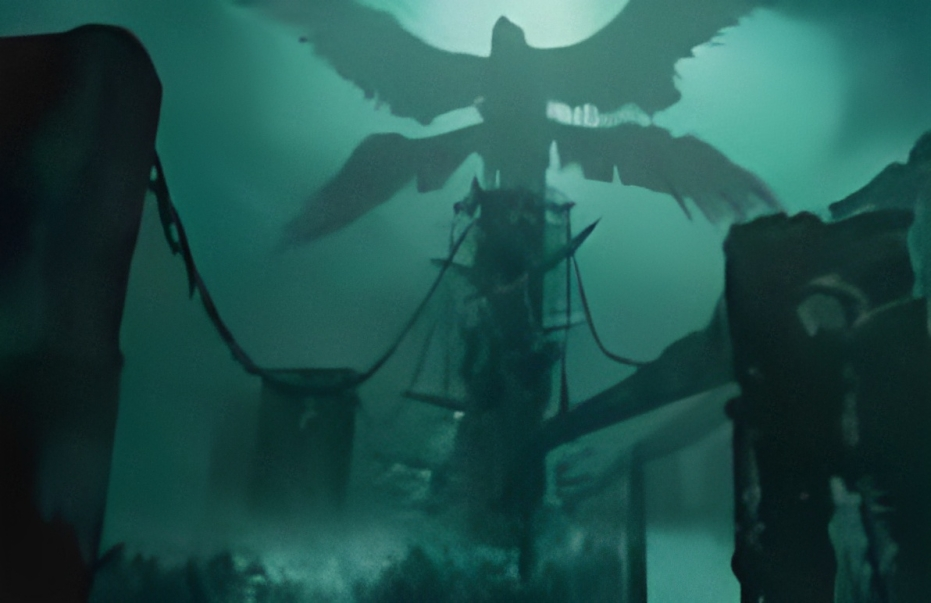

They appear for the first time in the game God Of War (2018) being a collectible that to get them you must break them with an attack from Kratos. In Norse mythology the ravens represent Odin, the allfather, he had two ravens called Hugin and Munin ("Thought and Memory") which according to mythology these traveled the planet during the day and in the afternoon they returned with Odin to whisper in his ear everything that they had seen

It appears for the first time in God Of War (2018) when Kratos kills the guardian of the Hellheim bridge
(the Nordic hell) which he watches from
Away from Kratos.
Hraesvelgr is a giant (Jötun) 4-winged raven that sits at the end of the world flapping its wings to
form the wind.